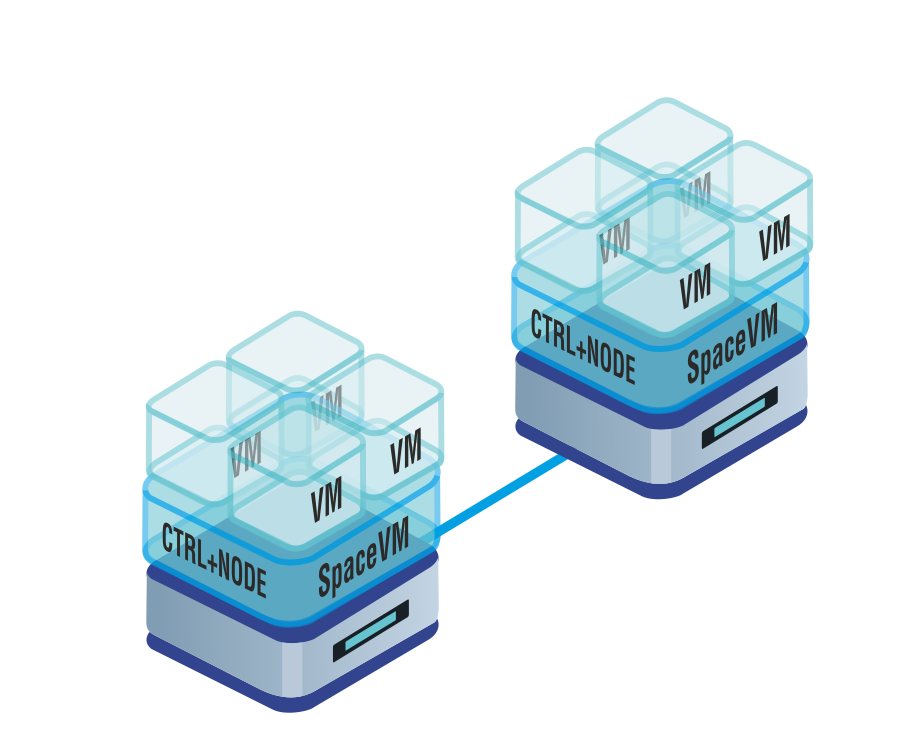

Сурцов Владимир Владимирович
Виртуальная машина (VM) — это абстракция вычислительной среды, реализованная посредством программного или аппаратно-программного комплекса, обеспечивающая эмуляцию аппаратных ресурсов и интерфейсов, характерных для физической вычислительной машины.
Виртуальная машина функционирует как изолированный объект, обладающий собственной виртуализированной аппаратной платформой, включая процессор, память, устройства ввода-вывода и периферийные интерфейсы.

Виртуальный процессор.Параметры vCPU:
Эмулирует центральный процессор (CPU), предоставляя гостевой системе набор инструкций и регистров, аналогичных реальному процессору.
Виртуальная память.Параметры памяти:
Реализует абстракцию оперативной памяти, обеспечивая каждой VM собственный изолированный адресный пространство и механизмы управления памятью.
Чипсет.
Это программно эмулируемый набор микросхем, который определяет архитектуру материнской платы, доступной гостевой операционной системе внутри VM. Чипсет отвечает за организацию взаимодействия между виртуальным процессором, памятью, устройствами ввода-вывода и периферийными интерфейсами, а также за поддержку определённых аппаратных стандартов и расширений.
Виртуальные диски и приводы.Параметры виртуальных дисков и приводов:
это программно эмулируемые накопители, которые для операционной системы и приложений выглядят как обычные физические диски, но на самом деле их данные хранятся в файле на физическом носителе.
Виртуальные сетевые интерфейсы.Параметры виртуальных сетевых интерфейсов:
Это программно реализованные сетевые адаптеры, которые функционируют на уровне операционной системы или гипервизора и обеспечивают сетевое взаимодействие между виртуальными машинами и физическими сетями.
Виртуальные графические устройства.Параметры виртуальных графических адаптеров:
Это программно эмулируемый графический адаптер, который не имеет собственного аппаратного обеспечения и реализуется средствами центрального процессора или гипервизора. Служит для отрисовки изображения.
Виртуальные звуковые устройства.
Это программно эмулируемый звуковой адаптер, который эмулирует работу физического аудиоадаптера. Она позволяет ВМ работать с аудиоданными так, как если бы к нему была подключена настоящая звуковая карта, но без необходимости наличия аппаратного устройства.
Виртуальный загрузчик.Параметры виртуального загрузчика:
Это программная эмуляция работы микропрограмм, отвечающих за инициализацию аппаратного обеспечения и запуск операционной системы.
Виртуальные устройства ввода.
Это программно эмулируемые компоненты, которые имитируют работу физических устройств ввода (клавиатура, мышь, тачскрин и др.) и позволяют передавать управляющие команды и данные от пользователя или автоматизированных систем гостевой ОС.
Виртуальные устройства ввода.
Это программно эмулируемые или синтетические устройства, которые обеспечивают взаимодействие между виртуальными компонентами (дисками, сетевыми адаптерами, USB-устройствами и др.) и виртуальной шиной данных ВМ. Они реализуют логику работы реальных аппаратных контроллеров (IDE, SCSI, SATA, USB, PCI и др.).
Это набор операций, позволяющих изменять режим работы VM (включение, выключение, приостановка, перезагрузка и др.) для эффективного использования ресурсов и обеспечения стабильности системы.Возможные состояния:
Это процесс создания практически полной копии существующей VM, включая её конфигурацию, операционную систему, приложения и данные. Клон становится независимой виртуальной машиной, которую можно запускать, изменять и использовать отдельно от оригинала.Типы клонов:
это операция, позволяющая зафиксировать текущее состояние VM (включая содержимое оперативной памяти, дисков, запущенные приложения и процессы) для последующего восстановления. Это особенно полезно перед тестированием, обновлением ПО или изменением конфигурации, чтобы в случае сбоя можно было быстро вернуться к рабочей версии системы.Типы сохранения состояния:
Это процесс переноса VM с одного физического сервера (хоста) на другой. Миграция позволяет балансировать нагрузку, проводить техническое обслуживание оборудования и обеспечивать высокую доступность сервисов.Типы клонов:
Изменение конфигурации виртуальной машины — это процесс модификации параметров VM после её создания.Доступные варианты изменения конфигурации:
Доступ к виртуальной машине можно получить различными способами в зависимости от типа гостевой операционной системы, платформы виртуализации и места размещения VM.Типы доступа: